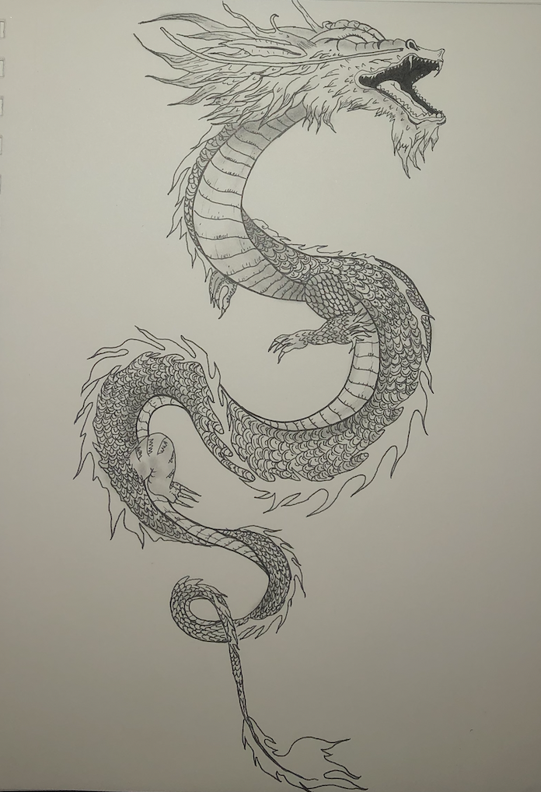

I am a Multi Media Artist and I am currently pursuing Studio Practice Preparation In Teaching at San Jose State University. I am inspired by Traditional Japanese Art because I feel that by continuing the tradition, I stay connected to my roots. Growing up, I felt disconnected from my culture and doing art has made me feel more connected.

Higaki © 2024